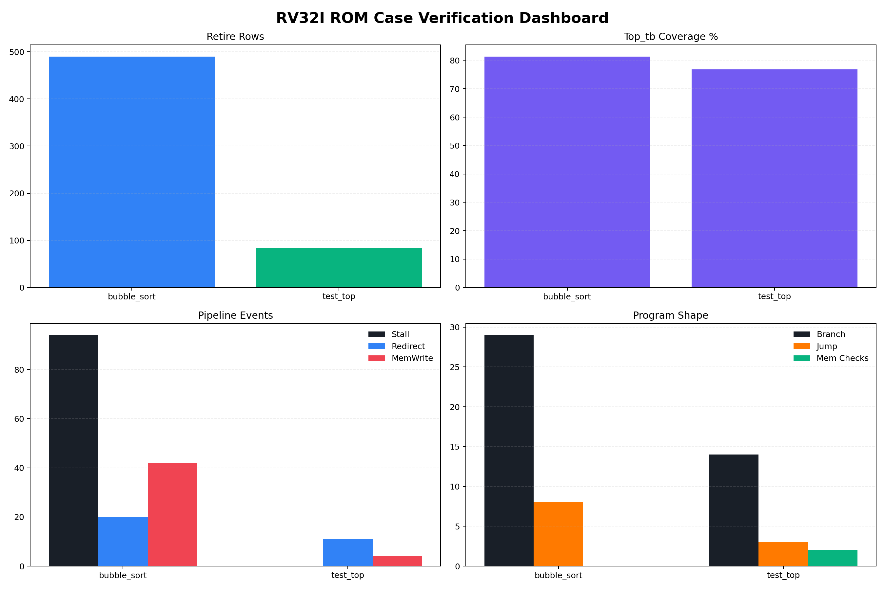
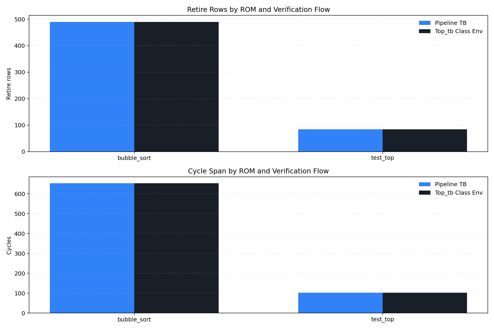
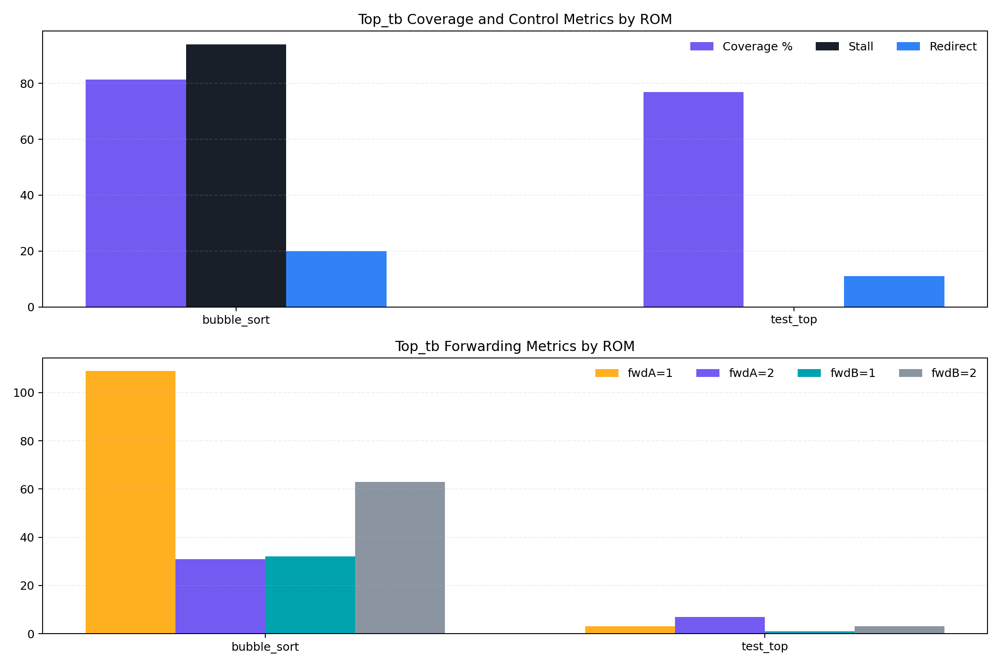

bubble_sort
PASStb/bubble_sort.csv
- Retire Rows
- 490
- Coverage
- 81.36%
- Stall
- 94
- Redirect
- 20
- MemWrite
- 42
- Branch/Jump
- 29/8
케이스별 ROM verification 결과와 metric을 합쳐서 보는 통합 대시보드입니다.
tb/bubble_sort.csv
tb/spike_test_top.csv
ROM별 retire, coverage, event, program shape를 한 화면에서 봅니다.

각 ROM에 대해 Pipeline TB와 Top_tb의 retire row, cycle span을 비교합니다.

coverage, stall, redirect, forwarding이 ROM마다 어떻게 달라지는지 보여줍니다.

| ROM | Result | Retire | Coverage | Stall | Redirect | Forwarding (A1/A2/B1/B2) | MemWrite | MemChecks |
|---|---|---|---|---|---|---|---|---|
| bubble_sort | PASS | 490 | 81.36% | 94 | 20 | 109/31/32/63 | 42 | 0 |
| test_top | PASS | 84 | 76.82% | 0 | 11 | 3/7/1/3 | 4 | 2 |